Model: prepare model configuration
modelConfiguration.RdModel: prepare model configuration
modelConfiguration(modelStructure, pondTemp = 20, gwTempIni = 12, infRate = 0.03, depthToWaterTable = 6, hydraulicGradient = 0.001, bnd = list(tmp = gwTempIni, ntx = 4, ntc = 1), hk = kwb.vs2dh::vs2dh.ConfigureGenuchten(ratioKzKh = 1, ss = 0, satKh = 750, porosity = 0.2, alpha = 2.3, rmc = 0, beta = 5.8), ht = kwb.vs2dh::vs2dh.ConfigureTrans(), iniOutputTime = 1/(3600 * 24), minSimTime = 0.5, maxSimTime = 31, outputTimeStep = 1, solver = kwb.vs2dh::vs2dh.ConfigureBasicSolver(), rSolver = kwb.vs2dh::vs2dh.ConfigureRechargePeriodSolver())
Arguments
| modelStructure | as retrieved by convRealCoordinatesToNodes() |
|---|---|
| pondTemp | constant pond temperature (default: 20) |
| gwTempIni | initial groundwater temperature (default: 12) |
| infRate | infiltration rate per unit area (Default: 0.9514151 m/d) |
| depthToWaterTable | water table below ground level (default: 6 m) |
| hydraulicGradient | hydraulic gradient between left & right model boundary (Default: 0), if positive flow is from left to right, if negative from right to left |
| bnd | list of structure list(temp=VALUE, ntx=VALUE, ntx=VALUE) passed to function defineHeadBoundary (i.e. boundary with seepage face), if bnd=NULL left/right boundaries are no-flow boundaries |
| hk | hydraulic properties of soil as retrieved by kwb.vs2dh::vs2dh.ConfigureGenuchten() |
| ht | transport properties of soil as retrieved by kwb.vs2dh::vs2dh.ConfigureTrans() |
| iniOutputTime | automatically output results after 1 second of simulation |
| minSimTime | minimum simulation time in days (default: 0.5) |
| maxSimTime | maximum simulation time in days (default: 31) |
| outputTimeStep | at which timestep are the results printed (default: 1 ), i.e. each day |
| solver | general solver (Default: kwb.vs2dh::vs2dh.ConfigureBasicSolver()) |
| rSolver | recharge period solver (Default: kwb.vs2dh::vs2dh.ConfigureRechargePeriodSolver()) |
Value
SVH model configuration
See also
defineHeadBoundary for valid additional arguments
Examples
### Importing GIS features shp.dir <- system.file("extdata", "qgis", package="kwb.demeau") shp.files <- dir(path = shp.dir, pattern = ".shp", full.names = TRUE) gisData <- importShapefiles(shp.files) ### Optionally remove some features gisData <- removeFeatures(gisData = gisData, ignoreFeatureIDs = c(3,20))#> #>modelStructure <- convRealCoordinatesToNodes(gisData = gisData) ### Model config conf <- modelConfiguration(modelStructure = modelStructure) ### Running the configuration in VS2DH res <- kwb.vs2dh::vs2di.runConfig(conf = conf, openTargetDir = TRUE)#> 1.Step: creating target directory or delete all files in that folder ...#> Warning: 'C:\Users\mrustl.KWB\AppData\Local\Temp\RtmpAZgSN8' already exists#> Done! #> 2.Step: convert R configuration to FORTRAN style...Done! #> 3.Step: writing configuration to 'C:\Users\mrustl.KWB\AppData\Local\Temp\RtmpAZgSN8/vs2dh.dat'....Done! #> 3.Step: Running vs2dh model in 'C:\Users\mrustl.KWB\AppData\Local\Temp\RtmpAZgSN8/vs2dh.dat'....1. Step: Create vs2dh.fil...Done! #> #> #> 2. Step: Run model...finished after 67.5 seconds #> #> 4. Step: Import model results...Done! #> #> Print warnings during simulation (vs2dh.out): #> Line: 28 ::: STOP SOLUTION IF MAXIMUM NO. OF ITERATIONS EXCEEDED IN ANY TIME STEP? T #> Line: 202 ::: DATA FOR RECHARGE PERIOD 1 #> Line: 1034 ::: EXCEEDED PERMITTED NUMBER OF ITERATIONS ( = 81) #> Line: 1204 ::: EXCEEDED PERMITTED NUMBER OF ITERATIONS ( = 81) #> Line: 1547 ::: EXCEEDED PERMITTED NUMBER OF ITERATIONS ( = 81) #> Line: 1717 ::: EXCEEDED PERMITTED NUMBER OF ITERATIONS ( = 81) #> Line: 2305 ::: EXCEEDED PERMITTED NUMBER OF ITERATIONS ( = 81) #> Line: 2632 ::: EXCEEDED PERMITTED NUMBER OF ITERATIONS ( = 81) #> Done!### Plotting results kwb.vs2dh::vs2dh.plotObservationPoints(paras = "TEMP", paraLabel = "Temperature", data=res$obsPoints)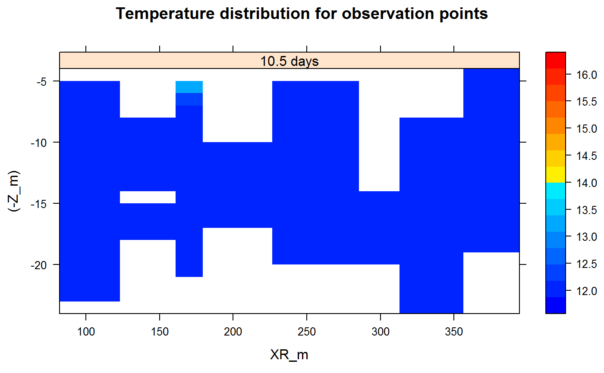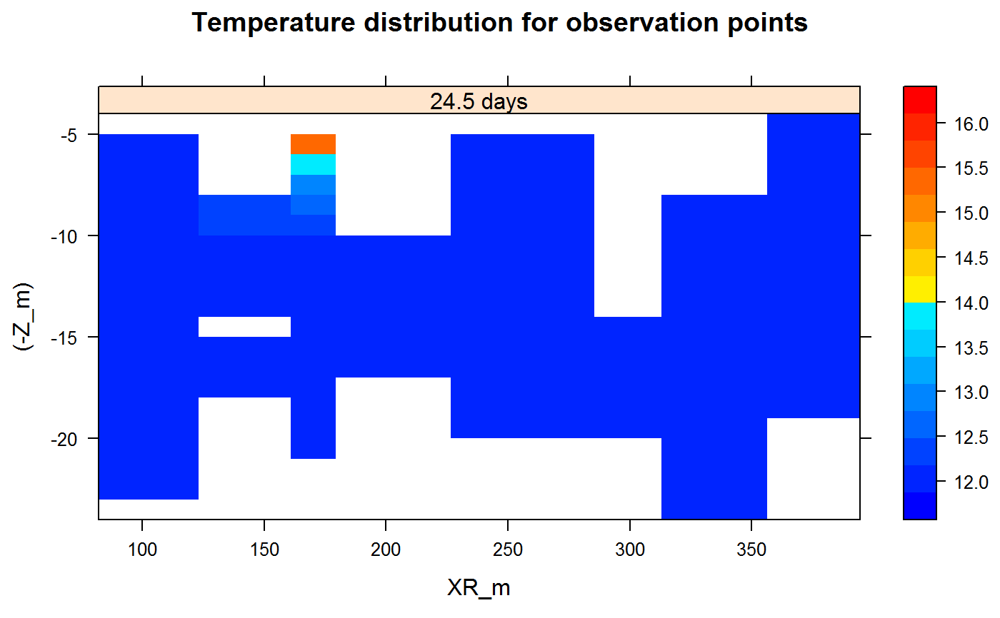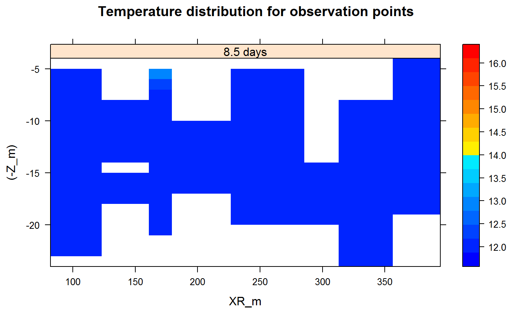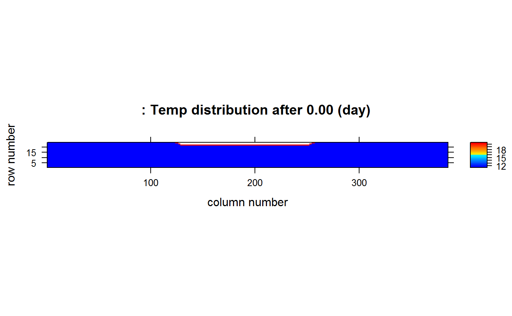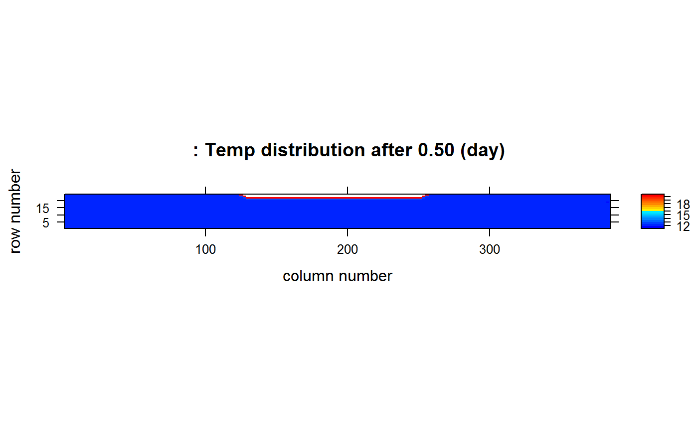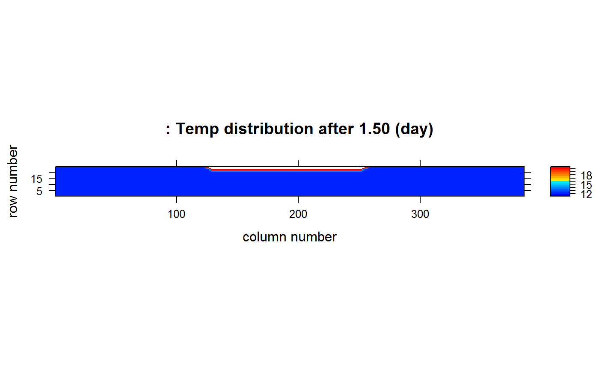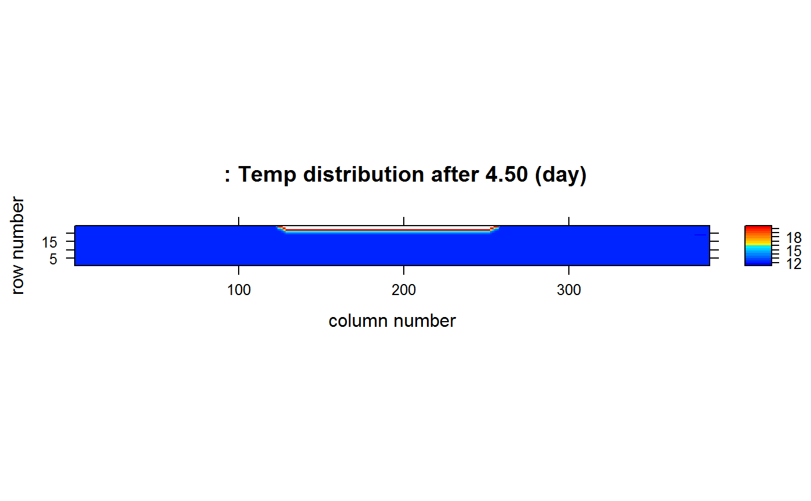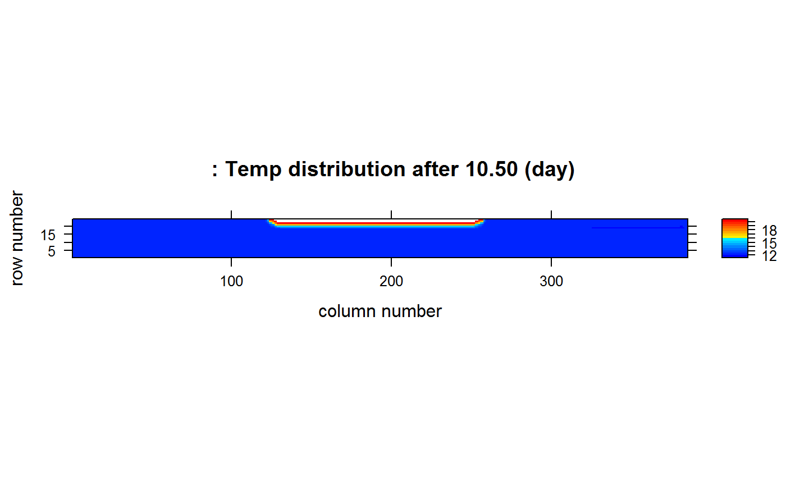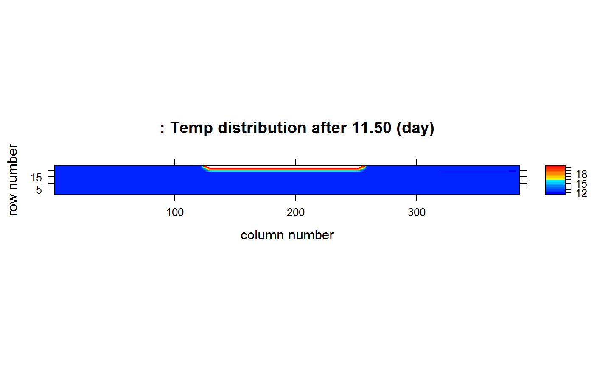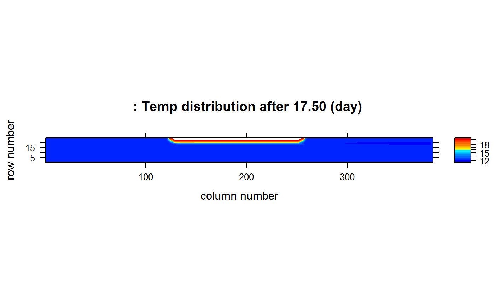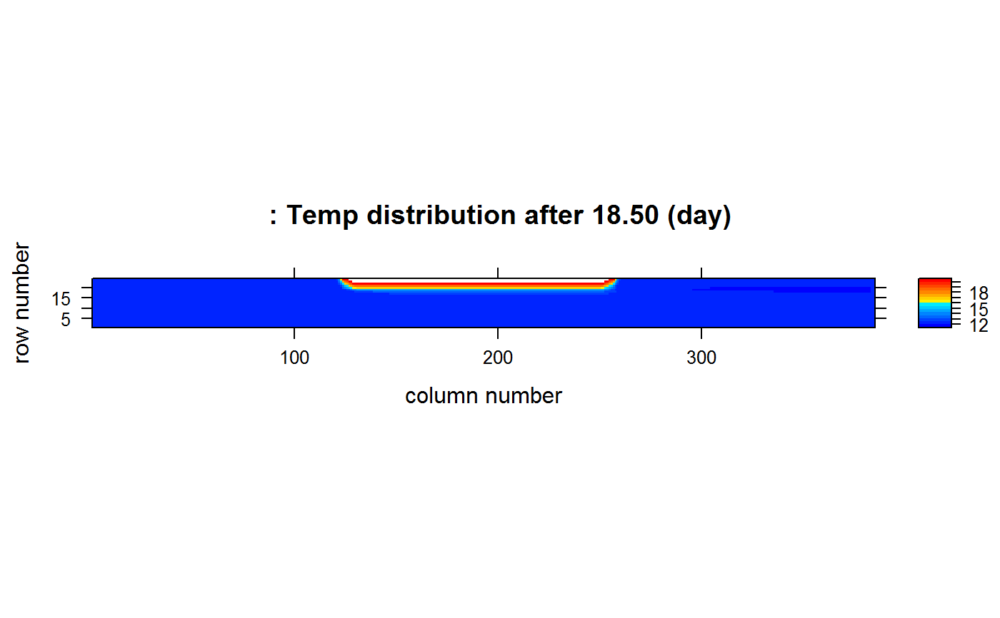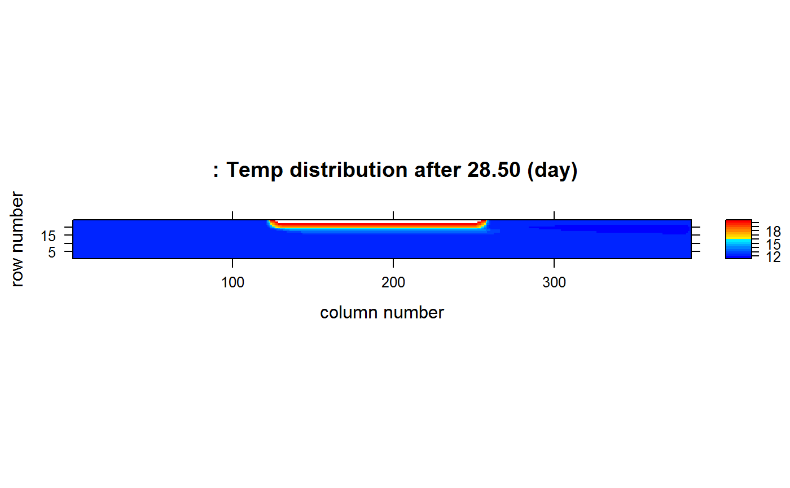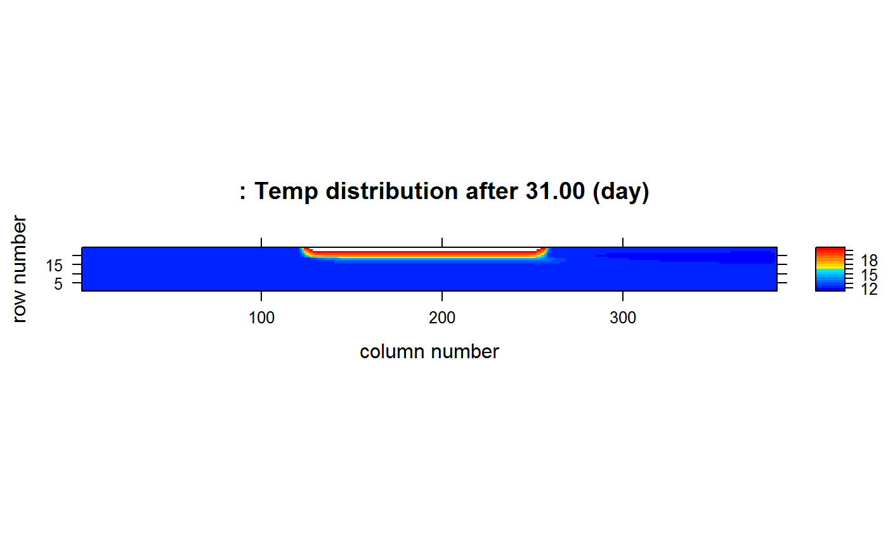